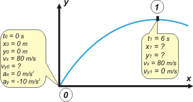
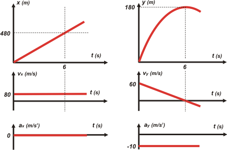

|
NO ME SALEN
PROBLEMAS RESUELTOS DE FÍSICA
(Tiro oblicuo)
|
|

|
 |
5.5- Un misil es disparado en tiro oblicuo desde
el nivel del mar. Al cabo de 6 seg su velocidad
es horizontal y de 80 m/s. En ese instante la altura
del misil respecto del nivel del mar es:
a) 80 m
b) 960 m
c) 180 m
d) se debe conocer la velocidad inicial
e) se debe conocer el ángulo inicial del tiro
f) 360 m |
|
Empecemos por una corrección conceptual: no se trata de un misil sino de un proyectil. Los misiles poseen motor a chorro, como los cohetes y los aviones jet y, obviamente, no viajan en trayectorias parabólocas.
La verdad sea dicha, los proyectiles tampoco viajan en trayectorias parabólicas a menos que la altura máxima de su viaje no supere los 20 metros, más o menos. El motivo es que en ese tipo de trayectorias despreciar el rozamiento con el aire es casi una grosería. El error cometido al aplicar las ecuaciones de TO en esos movimientos supera ampliamente lo tolerado para aceptar la descripción como válida.
Hecha la aclaración, vamos a suponer que lo narrado en el enunciado es un movimiento de tiro oblicuo (además, lo dice)... cerramos los ojos... Y, como de costumbre, empezamos con un esquema.
|

|
|
| cuando armás un esquema al mismo tiempo estás eligiendo un Sistema de Referencia |
|
Supongo que vos hubieras elegido las mismas constantes iniciales que yo. La clave de todo el ejercicio es darse cuenta de que en el punto más alto de la trayectoria la velocidad vertical se anula, por lo tanto, la velocidad real en ese punto no es otra que la componente horizontal de la velocidad, constante en todo el movimiento.
¿Cuántas ecuaciones horarias describen este problema? Tres, porsupu, como todo TO. Para hallarlas basta con reemplazar las constantes (to , xo , yo , vx , voy , y g) de las ecuaciones generales de los tiros oblicuos:
x = xo + vx ( t – to )
y = yo + voy ( t – to ) + ½ g ( t – to )²
vy = voy + g ( t – to )
En el esquema, en el cuadradito que habla del punto 0, están todas las constantes que necesitamos para armar las ecuaciones que describen el movimiento del cuerpo.
x = 80 m/s. t
y = voy . t – 5 m/s² . t²
vy = voy – 10 m/s² . t
|
|
|
Esta es la parte importante del problema; miralas, disfrutalas, esas tres ecuaciones que quedaron ahí escritas describen todo el movimiento, todo el fenómeno. Mirá cómo hablan de todos los instantes, de todas las posiciones.
Lo que resta ahora es muy sencillo; basta con que les pidamos a las ecuaciones del cuerpo que hablen de los puntos de interés en el problema: el 1. |
|
|
 |
x1 = 80 m/s . 6 s |
|
[1] |
| y1 = voy . 6 s – 5 m/s² . 36 s² |
|
[2] |
| 0 m/s = voy – 10 m/s² . 6 s |
|
[3] |
|
|
Estas son las ecuaciones especializadas para el instante que a vos te interesa,
o sea,
el 1. |
Me lo temía: quedó un sistema de tantas ecuaciones como incógnitas (3x3), en las que las incógnitas, si sabemos interpretarlas, son las que nos pide el enunciado del problema. Quiere decir que acá terminó la física del problema... lo que resta es álgebra. Y es bastante sencilla. |
|
|
De la ecuación [3] despejás
voy = 60 m/s
Eso lo metemos en la [2], que también tiene una sola incógnita
y1 = 60 m/s . 6 s – 5 m/s² . 36 s²
|
|
|
| |
y1 = 180 m |
la respuesta correcta es la C) |
|
|
|
| le chupamos las medias un cachito al profe, y le decimos que eso ocurre a una distancia horizontal de 480 m. Y, por supuesto, le mostramos lo gráficos. |
|
|
|  |
|
|
| Me embola escribir m/s (metro sobre segundo) de esa forma, con la raya oblicua. Lo correcto es escribir la m justo arriba de la s y la raya horizontal. Pero no sé editar eso en html (me refiero a: sin tener que insertar una imagen). Lo mismo con 1/2, y para todas las expresiones fraccionarias grandes ni te cuento. Vos no lo hagas en tus apuntes, ni menos que menos en los exámenes. |
|
|
¿Tenés ganas de leer algo que te rompa la cabeza? |
| |
|
|
DESAFIO: ¿con qué ángulo fue disparado el proyectil/misil? |
|
 |
| Algunos derechos reservados.
Se permite su reproducción citando la fuente. También se permite que sea sin reproducción... ¿se comprende? Última actualización abr-13. Buenos Aires, Argentina. |
|
|
| |
|